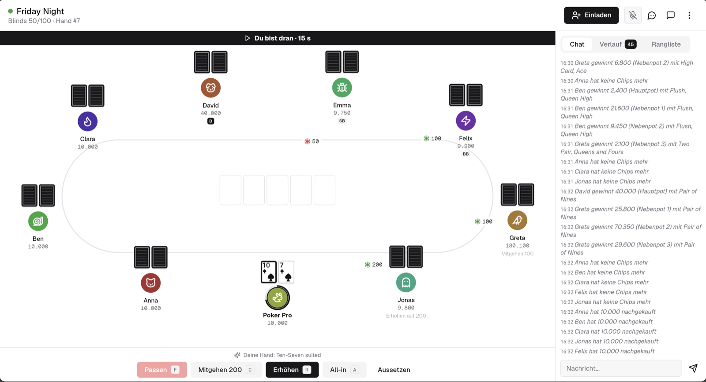

Real No-Limit rules
Side pots, short all-ins, min-raise logic and odd-chip splits done on the server. The client only renders.
Showdown is a No-Limit Hold'em table that runs in the browser. Create a table,
share the link, play. The whole thing is one docker compose up
and never talks to the outside world.
The managed instance keeps a table and its link for one day. Self-host if you want history that lasts.

A complete cash-game table, nothing more, nothing less.
Side pots, short all-ins, min-raise logic and odd-chip splits done on the server. The client only renders.
Players open the link, pick a name and an avatar, and sit down. A refresh or dropped connection returns them to their seat.
Browser-to-browser WebRTC, with an optional small camera tile per player. The server only relays the handshake and never carries audio or video.
Whoever creates the table is the host: live settings, blind schedules, pause and end, kick, adjust chips, mute, chat moderation.
Every hand is logged and can be replayed step by step. Each table keeps its own leaderboard and final standings.
Two containers, one SQLite file, zero external requests. The web client is a local WebAssembly build.
Try it in a minute, or run it for good.
Open the site, create a table and share the link. Nothing to install and no account.
Run the same stack on your own machine or server. Your data stays with you.
All you need is Docker with the Compose plugin. The images come from GitHub's registry.
The images are published on GitHub's registry; nothing is compiled on your machine.
mkdir showdown && cd showdown
curl -fsSLO https://raw.githubusercontent.com/argseby/Showdown/main/docker-compose.ymlPort, table limit, retention, STUN servers for voice chat across networks, or IMAGE_TAG to pin a release.
curl -fsSL https://raw.githubusercontent.com/argseby/Showdown/main/.env.example -o .envdocker compose up -dOpen http://localhost:8080, create a table and share the link. Done. In Portainer: add a repository stack with compose path docker-compose.yml; updates are "re-pull image and redeploy".
Already running Traefik, nginx, Caddy or Dokploy? Point it at the web container on port 80 and let it terminate TLS. WebSockets on /ws/* must be forwarded.
Also download deploy/docker-compose.proxy.yml from the repository next to the compose file.
cat >> .env <<'EOF'
PROXY_NETWORK=proxy-network
COMPOSE_FILE=docker-compose.yml:deploy/docker-compose.proxy.yml
EOF
docker compose up -dIf nothing sits in front of the stack and ports 80/443 are reachable from the internet (needs deploy/docker-compose.tls.yml).
echo "SITE_ADDRESS=poker.example.com" >> .env
docker compose -f docker-compose.yml -f deploy/docker-compose.tls.yml up -dBrowsers only grant the microphone on HTTPS, so voice chat needs one of these two setups.
For development or a fork. The web image compiles the Flutter client: a few minutes and about 2 GB of disk.
git clone https://github.com/argseby/Showdown.git
cd Showdowncp .env.example .envmake up is the same command.
docker compose -f docker-compose.yml -f deploy/docker-compose.build.yml up -d --buildReleases are built by the repository's CI: pushing a tag v* publishes both images.
web is exposed (default 8080); the API stays internal
docker compose pull && docker compose up -d, migrations run on start
Full configuration, backups and operations are in the README.
One day. After that the table, its link, hands and chat are deleted. Start a new table for the next session, or self-host to keep history.
No. A table link and a display name are all it takes. Names are chosen per table and are not identities.
No. Chips are just numbers on the table. There is no payment, no wallet, no exchange of any kind.
The browser that created it holds an admin key and sees an Admin tab. The key can be copied to another device. Anyone with the key can manage the table, so share it only with co-hosts.
Never. The API makes no outbound requests and the client is served entirely from your own instance. Voice chat only uses a STUN server if you configure one.